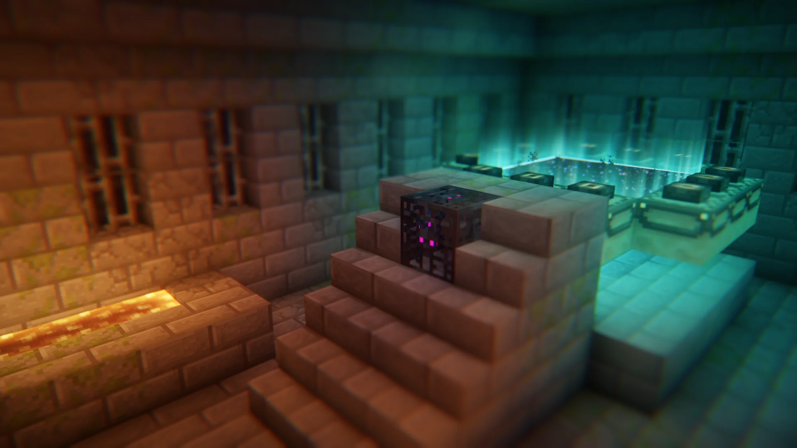
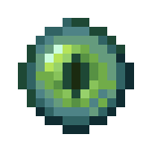
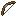

MAKE EVERY HEART LAST
Healing is earned.
A full hunger bar won’t heal you. Golden Apples and Health Potions will. Strength and Regeneration Potions cannot be crafted.
ULTRA HARDCORE HISTORY
Every team, battle, and ultimate victory.
Explore the history of our UHC matches.
THE MATCH RECORDS
CHRONICLING THE PLAYERS' STORIES
Trophy case, career trivia, and more.
Full profiles unlock after five recorded matches.
THE NUMBERS BEHIND THE MATCHES
Records and data visualized.
Statistics calculated from UHC_Data.xlsx. Table and graph categories from the original Hyalus UHC site. Totals use the current workbook. All-time tables include players below the five-game profile requirement.
THE COLORS OF COMPETITION
How well have colors competed over their matches?
Compare victories, combat, and survival across their full histories.
THE INDIVIDUALS WHO DEFINE THE GAME
Combat, victories, defense, and the cost of friendly fire.
A performance ranking built from every recorded match.
THE MOMENTS THAT MADE THE ARCHIVE
Recorded time ties share awards. Death milestones count PVP, PVE and Team Kill deaths; disconnects and disqualifications are excluded. Match lengths use the last recorded elimination. Gameplay stories may describe earlier seasons and have not been revalidated from recordings.
Original worksheet entries are preserved for context. These older totals do not override the current record cards.
Historical gameplay notes come from the “UHC Trivia” section of Hyalus UHC Trivia & Charts.docx. Record categories also draw on the first “UHC Records” tab in Hyalus UHC Trivia & Records.xlsx and the old site’s Records page.
HYALUS UHC · A FIELD GUIDE
A world to survive. Teams to outlast.
And no hearts to spare.
THE RULES OF SURVIVAL
Minecraft survival, with the stakes turned up. Confined within a World Border, players compete—often in teams—to be the last standing. Lost health does not regenerate naturally.
MAKE EVERY HEART LAST
A full hunger bar won’t heal you. Golden Apples and Health Potions will. Strength and Regeneration Potions cannot be crafted.
ONE TEAM LEFT
The last team with a living teammate wins. Everyone on that team is a winner, including teammates who died along the way.
THE IRONMAN AWARD
The last player who has not taken damage earns Ironman. No special advantage—just the bragging rights.
A TRADITION SINCE SEASON 1
A match ends.
The title lives on.
The Crown follows its holder from season to season. It can pass only once per season.
Kill the Crown holder in PVP and the Crown passes to you.
If the holder survives, they retain the Crown. If they miss consecutive matches, it transfers retroactively in the first match they missed.
When the holder dies outside combat, the Crown goes to a winner who is still alive. Ties are resolved in this order:
Hover over a Crown in a season table to read its history. Click it to return here.
FAMILIAR WORLD. DIFFERENT GAME.
Who you trust, who you find, and who you fight can change from one season to the next.

AN ALTERNATIVE WIN CONDITION
You don’t always have to be the last team standing.
In Ender Dragon games, an End Portal Frame waits at spawn, X: 0, Z: 0. All but three or four frames already hold Eyes of Ender.

Two routes. One victory.
Slaying the Dragon wins even while rival teams are alive. Being the last team standing still ends the game; the Dragon does not have to die.
HIDDEN ALLEGIANCES
Your teammate might be playing for someone else. In these games, all or most teams have a mole on a secret team.
Teams are spread normally. 20 minutes in, moles are randomly and secretly selected. A quiet message reveals their role and fellow moles. They keep their original team color to blend in.
The mole team wins like any other: be the last team standing.
TWO SIDES. ONE WINNER.
Just two teams, pitted against each other. Choose your battles and keep your teammates alive.
STRANGERS TO TEAMMATES
Everyone starts alone and teamless. When two players run into each other, a team forms. The team limit is set before the match—typically two or three players.

A PLACE FOR THE EXTRA PLAYER
When player numbers don’t divide neatly into teams, a roamer may start alone and be spread separately. They join the first team they come across.
NOW YOU KNOW THE GAME.
NEXT CHAPTER
← Explore the seasons